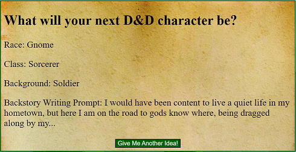

Character Concept Generator
As a long-time tabletop nerd, I've taught many people to play games like D&D or Pathfinder over the years. One of the most common obstacles new players have is being overwhelmed with options and not knowing what they want to play. This tool, which generates a random character concept was a project I began to envision from my very first lesson in the Vue.js framework. I've already shared it with some of my gaming friends, and some of them already have players they want to show it to before their next games.
Click the image to the right to load the application, or see the code here on GitHub.

Grocery List (Updated)
We keep a physical whiteboard on the wall in our kitchen, and throughout the week, we add things to it as they come to mind. And then, as often as not, we go to the grocery on Saturday...and forget everything on the whiteboard. When I saw someone build a grocery list app, I was intrigued, but as I looked over the code, there were a few things I thought were missing. Most notably the app was rather plain-looking. Also the app was missing the ability to undo the strikethrough on an item if you clicked it by mistake. I decided to rebuild the app with a few of my own additions, and here is the result.
Click the image to the right to load the application, or see the code here on GitHub.